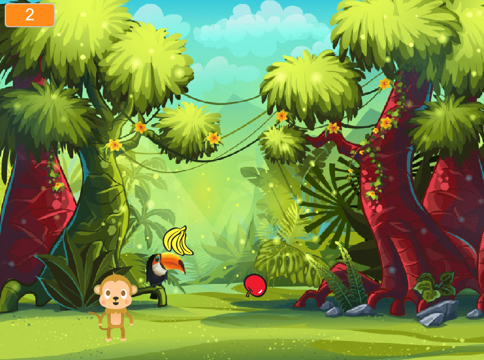
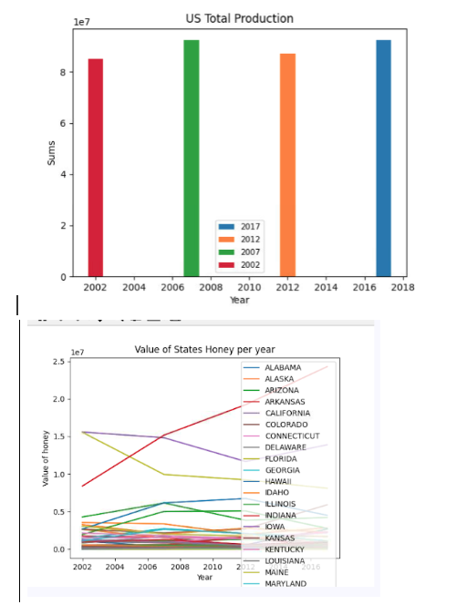
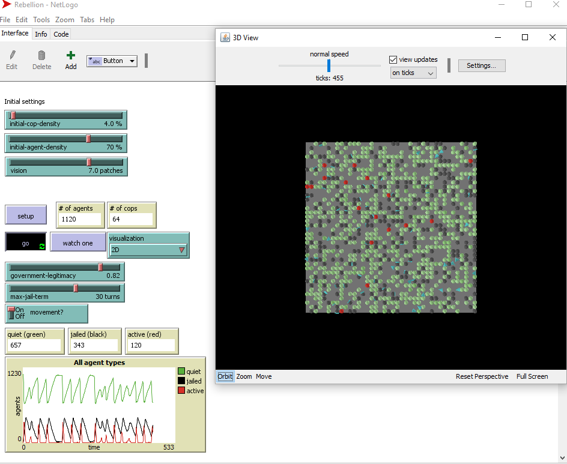
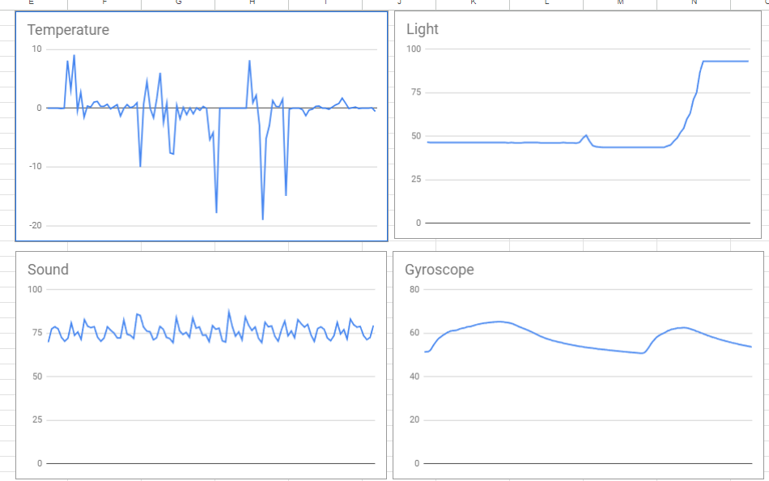

Home
Portfolio
About Me
This is my Portfolio Page!
Sugar Cookie Decorator 1.1.9 Project!

Our game allows the player to customize their sugar cookie by answering a series of questions. In our program we used for and if statements as well as conditional statements.
Fly Catcher 1.2.5 Project!

The player must click as many flies as possible before the timer runs out. In our program we used user input, incorporated exsiting turtle methods, and used code statements.
Monkey Business Scratch Project!

We created a catcher monkey game where the objetive is to collect as many bananas as you can while avoiding the apples. In our scratch code with used many lists and events.
3.2.4 Project!.

The graphs above represent the value of honey from each state.
4.1.4 Project!

The model simulates a population being controlled and kept out of rebellion by the police force.
3.1.6 Project!

My partner and I have come to the conclusion that the rover is located in Desert Plains. We compared our actual data to our theories of what the graphs looked liked and the sound was the highest and most consistent out of all the regions. We first used a process of elimination based on sound, temperature, and light and then zeroed in on the sound factor.